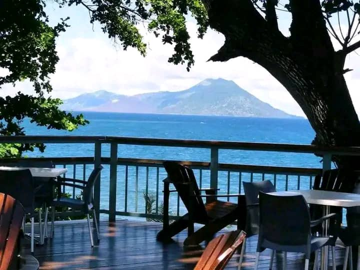
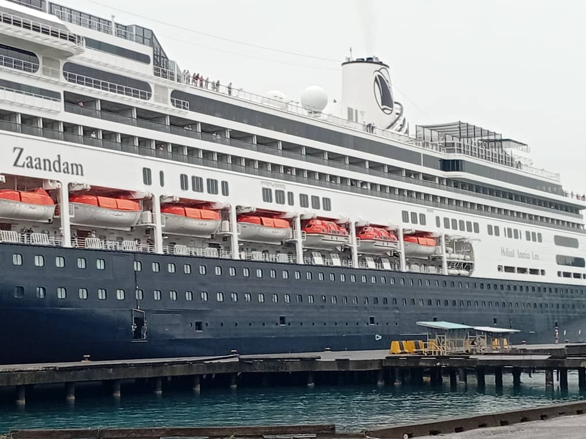

There's a special energy in Kokopo when a cruise ship is in town. The morning air buzzes with anticipation. The market vendors wake up a little earlier. The tour buses get their final polish. And at Simpson Harbour, a giant vessel slowly makes its way into the bay, carrying hundreds of visitors eager to discover our corner of the world.

I've been guiding cruise ship visitors for over eight years now, and every time I watch that ship approach the wharf, I feel the same excitement I felt the very first time. It's more than just a job—it's an opportunity to share the beauty, the culture, and the warmth of my home with people who have traveled from across the oceans to be here.
Today, I want to take you behind the scenes of a cruise ship day in Kokopo. From the first glimpse of the ship on the horizon to the final farewell as it sails away, this is what we share with our visitors from around the world.
The Arrival: A Ship on the Horizon
The day usually begins before sunrise. I wake up early, check the schedule, and confirm with our team of drivers and guides. By 6:00 AM, we're already at the wharf, watching as the ship slowly glides into Simpson Harbour.
From the shore, you see it emerge from the darkness—a floating city of lights, moving with quiet confidence across the calm waters. The first rays of sun catch its white hull, and suddenly the whole bay seems to come alive. Fishing boats begin their morning journeys. The market comes to life. And the town of Kokopo stirs, ready to welcome our guests.
As the ship docks, there's a moment of anticipation. Then the gangway lowers, and the first visitors step onto Papua New Guinean soil. Some are seasoned cruisers who have visited dozens of ports. Others are experiencing their first-ever cruise. But nearly all of them share the same expression—a mixture of excitement, curiosity, and wonder at the beauty of this place.
"Welcome to Kokopo," I say with a smile. "Welcome to East New Britain."
The Welcome: A Tradition of Hospitality
One of my favorite moments is the traditional welcome ceremony. Local cultural groups gather near the wharf, dressed in their finest bilas—the traditional attire of feathers, shells, and tapa cloth. The sound of the kundu drums echoes across the harbor as dancers move in rhythm, telling stories that have been passed down through generations.
For many visitors, this is their first real taste of Papua New Guinean culture. Their eyes widen as they watch the dancers, some of them picking up their phones to capture the moment. Children in the crowd bounce along to the drumbeats, while older visitors watch with quiet appreciation.
After the performance, our visitors are welcomed with fresh flower garlands—the same garlands we give to family and honored guests. It's a small gesture, but it means everything. It says, "You are welcome here. You are not just a visitor—you are part of our community, even if only for a day."
I've seen grown men brought to tears by this simple act of kindness. There's something powerful about being welcomed so openly, so warmly, in a place you've never been before.

Exploring the Town: Markets and Memories
After the welcome ceremony, our visitors fan out across Kokopo. Some join our guided tours to explore the volcanic landscapes of Rabaul. Others head straight to the market, drawn by the vibrant colors and exotic smells.
The Kokopo Market is a sensory overload in the best possible way. Stalls overflow with fresh tropical fruits—papaya, pineapple, mango, watermelon. The sweet scent mingles with the earthy smell of freshly harvested vegetables. Vendors call out in Tok Pisin, their voices mixing with the laughter of children and the bargaining of shoppers.
"Try this," I tell my group, handing them a slice of freshly cut mango. "This is what sunshine tastes like."
Their faces light up. "Oh my goodness," one woman exclaims. "I've never tasted mango like this!"
Further into the market, we find the bilas stalls—handmade jewelry, carved masks, woven baskets. The craftsmanship is extraordinary. Each piece tells a story. The carvings depict our legends. The woven patterns represent family histories. And behind every stall is an artist who learned their craft from their parents, who learned it from their parents before them.
Beyond the Town: Adventures Await
For those who want to venture further, we offer a range of tours. Some visitors choose to explore the historic Japanese tunnels, walking through the underground passages that tell the story of World War II. Others visit the Volcanic Observatory, gazing out at the smoking cone of Mt. Tavurvur and learning about the forces that shaped this land.
I always recommend the drive to Rabaul. The journey takes us through villages and plantations, past the old airport buried in ash from the 1994 eruption. At the lookout, visitors stand in awe, taking in the view of the bay, the volcanoes, and the town below. Some take photos. Some just stand in silence, absorbing the moment.
One of my favorite stops is the Rabaul Hot Springs. The water bubbles up from deep beneath the earth, heated by the volcanic activity below. Visitors dip their feet in, marveling at how the water stays warm year-round. Children play in the shallows, while their parents relax on the rocks, watching Tavurvur smoke in the distance.
"I never imagined anything like this," a visitor told me last season. "I've been to 50 countries, John. But this—this is something special."
Lunch: A Taste of Home
By midday, appetites are calling. Some visitors return to the ship for lunch, but many choose to stay onshore and experience our local cuisine.
At the Kokopo Beach Bungalows, we set up a special lunch for our guests. Tables are arranged under the palm trees, looking out at the turquoise water. The menu features local specialties—fresh fish grilled over coconut husks, taro cooked in coconut milk, fried bananas, and saksak (a traditional sago pudding).
"What is this?" a visitor asks, pointing to the taro.
"It's like a potato," I explain, "but sweeter. Try it with the coconut cream."
They take a bite. Their eyes close for a moment, savoring the taste. "That's incredible," they say. "I need the recipe."
We eat, we laugh, we share stories. The conversation flows easily, the way it does when strangers become friends over a good meal. Some of our visitors tell us about their own homes—the cities they come from, the families they miss, the adventures that brought them here.
For me, these moments are the heart of what we do. It's not just about showing people the sights. It's about connection. It's about making people feel like they belong, even if only for a day.
The Farewell: Until We Meet Again
All too soon, the day comes to an end. The ship's horn sounds, signaling that it's time to return. Our visitors gather at the wharf, some of them laden with market purchases, all of them carrying new memories.
There are handshakes and hugs. Promises to return. Emails exchanged. Some of our visitors have tears in their eyes as they say goodbye.
"Thank you," they say. "This was the best day of our whole cruise."
"Thank you for coming," I reply. "You are always welcome here."
We stand on the wharf, watching as they board the ship. They wave from the deck, calling out their thanks. We wave back, our hands raised in farewell.
Then the gangway rises. The ropes are cast off. And slowly, majestically, the ship begins to pull away from the dock.
We watch until it becomes a speck on the horizon, then a memory, then a story we'll tell again and again.
Why It Matters
Some people ask me why I love this work. Why I get up before dawn, why I answer the same questions day after day, why I never seem to tire of welcoming strangers to my home.
The answer is simple. Every visitor who comes here leaves with a piece of Papua New Guinea in their heart. They go home and tell their friends. They share photos, they share stories, they share their love for this place. And sometimes, they come back—bringing family, bringing friends, bringing the people they told about that magical day in Kokopo.
Tourism is about more than just showing people around. It's about building bridges. It's about showing the world the beauty, the warmth, the richness of our culture. And every time a cruise ship docks at Simpson Harbour, we get to do that all over again.
So here's to the cruise ship visitors. Here's to the early mornings and the late afternoons. Here's to the market vendors, the tour guides, the dancers, the cooks, the drivers—everyone who makes these days possible.
And here's to Kokopo. To the people who call it home. To the visitors who leave as friends. To the stories we share, the memories we make, and the welcome that never ends.
Until next time, safe travels. And when you see a ship on the horizon, remember—there's a place here waiting for you.
John Kila is a senior tour guide and cultural ambassador at Bismark Touris. Born and raised in East New Britain, he has been welcoming cruise ship visitors to Kokopo since 2018 and loves sharing the stories of his homeland.
🛳️ Planning a cruise stop in Kokopo?
Let us show you the best of East New Britain! Contact us to arrange your shore excursion.
Book Your Tour →